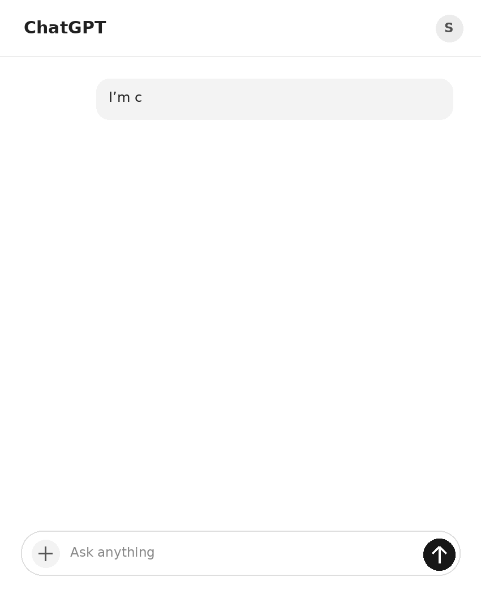

How do learners build and adapt mental representations of abstract mathematical concepts?
I use zero and negative numbers as model systems for studying how mathematical representations emerge across development, vary across individuals and contexts, and shape problem solving.
Zero
How learners develop a spatial conception of zero as a reference point between positive and negative numbers.
Negative numbers
How representations of negative magnitude vary across development, individuals, and contexts.
Flexibility
When learners recruit different representations and how those representations support mathematical reasoning.

How do external representations shape mathematical reasoning?
I study how patterns, diagrams, and instructional representations direct learners' attention toward mathematical structure and shape the strategies they use.
Patterns
How learners identify units, regularities, and systematic change in mathematical patterns.
Attention
How gesture, imitation, language, and perceptual cues influence what learners encode.
Diagrams
How visual representations make relational structure visible during mathematical problem solving.

How can human–AI interactions support mathematical learning?
I study AI both as a tool for understanding learners' developing knowledge and as part of the environments in which mathematical learning increasingly occurs.
Measurement
Using longitudinal student work to model developing mathematical knowledge and mastery.
Interaction
Studying how students use generative AI during authentic mathematics learning.
Learning analytics
Characterizing what students ask AI to do, what support AI provides, and how learners respond.